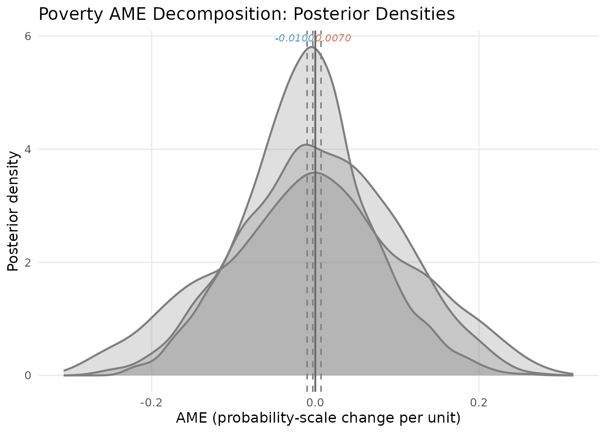
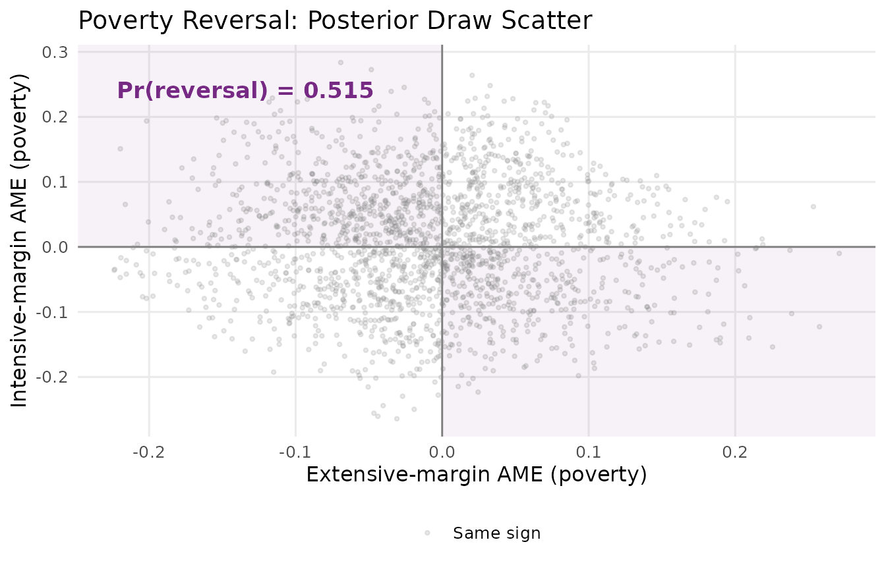
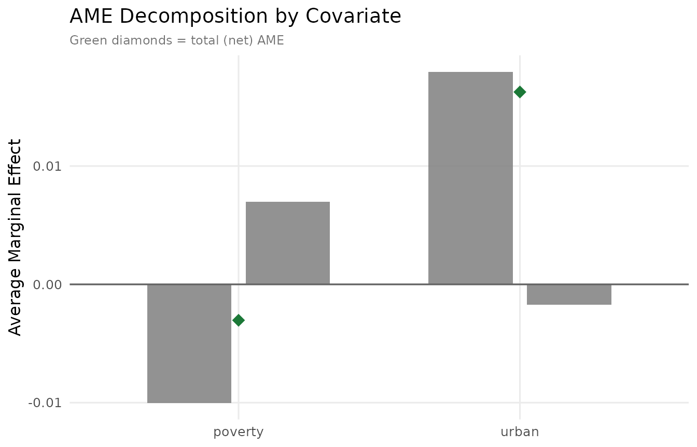
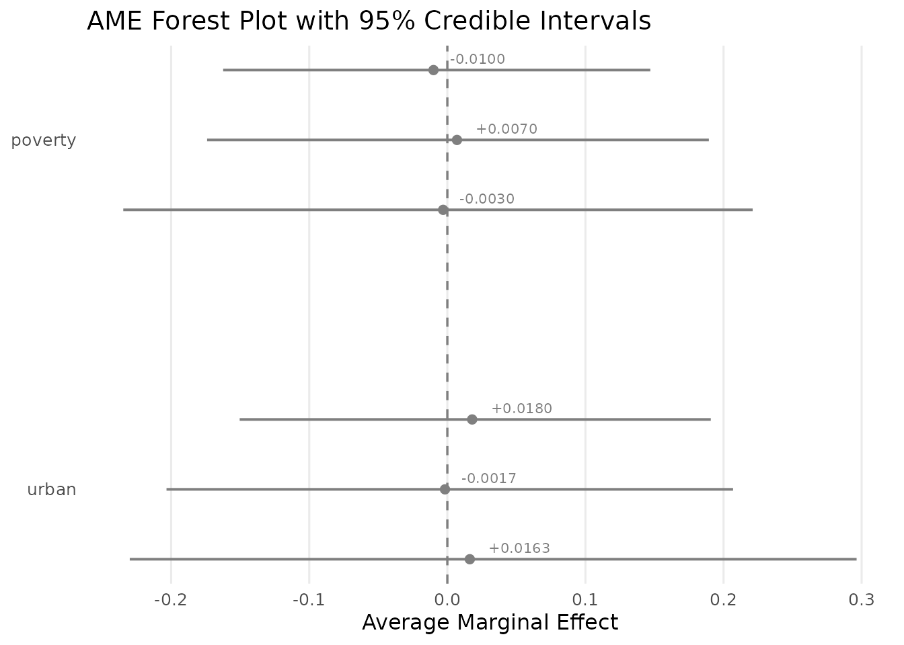

Marginal Effects
JoonHo Lee
2026-02-27
Source:vignettes/05-marginal-effects.Rmd
05-marginal-effects.RmdOverview
The previous vignettes fitted Hurdle Beta-Binomial models and inspected raw coefficients. But logit-scale coefficients are hard to interpret in practical terms: what does an actually mean for the expected IT enrolment share? And how much of that effect flows through the participation decision versus the intensity decision?
Average marginal effects (AMEs) translate logit-scale parameters into probability-scale changes, answering the question: if we increase covariate by one unit for every centre in the sample, by how much does the expected IT share change on average?
The hurdle model’s two-part structure adds a crucial twist. Because the expected IT share is the product of two probabilities — participation and conditional intensity — a single covariate can push the outcome in opposite directions across the two margins. The AME decomposition makes this transparent by separating each covariate’s effect into its extensive-margin and intensive-margin contributions.
In this vignette you will learn how to:
- Derive the AME decomposition from the product rule.
-
Compute extensive, intensive, and total AMEs using
ame(). - Read the decomposition table with sign patterns and share percentages.
- Visualise the poverty reversal through posterior density plots.
- Quantify the reversal probability from posterior draws.
- Optionally obtain design-corrected Wald AME intervals via the sandwich variance.
The Decomposition Formula
The Hurdle Beta-Binomial model implies that the expected IT share for centre is:
where is the participation probability (extensive margin) and is the conditional enrolment share (intensive margin).
Differentiating with respect to covariate using the product rule:
The first term captures how much changes IT share by altering whether the centre participates. The second captures how much changes IT share by altering how intensely participating centres serve IT children.
The average marginal effect averages over all observations:
A key computational insight: the -vectors and do not depend on which covariate we are differentiating with respect to. So we compute them once per MCMC draw and multiply by the appropriate coefficient:
reducing the per-draw cost from to .
Computing AMEs
The ame() function handles the full computation —
looping over posterior draws, computing extensive and intensive kernels,
and returning point estimates, credible intervals, and reversal
probabilities.
# In a live session after fitting:
fit <- hbb(y | trials(n_trial) ~ poverty + urban,
data = nsece_synth, weights = "weight",
stratum = "stratum", psu = "psu",
chains = 4, seed = 42)
# Basic AME decomposition
ame_result <- ame(fit)
# With design correction (adds Wald CIs):
# ame_result <- ame(fit, cholesky = chol, sandwich = sand)We load pre-computed results for this vignette:
AME Print Output
The print() method provides a structured summary of the
decomposition:
cat(paste(results$ame_print_text, collapse = "\n"))
#>
#> =================================================================
#> Average Marginal Effects Decomposition (HBB Model)
#> =================================================================
#>
#> Observations (N): 6785
#> Covariates (P): 3 (incl. intercept)
#> Parameters (D): 7
#> Draws used (M_use): 4000 (of 4000 total)
#> Confidence level: 0.95
#>
#> Mean P(serve IT): 0.5987
#> Mean E[IT share | serve]: 0.4919
#> Mean E[IT share]: 0.2945
#>
#> -----------------------------------------------------------------
#> AME Decomposition (non-intercept covariates)
#> -----------------------------------------------------------------
#> Covariate Ext_AME Int_AME Total_AME Ext% Int% Pattern
#> -----------------------------------------------------------------
#> poverty -0.0100 +0.0070 -0.0030 58.9% 41.1% opposing
#> urban +0.0180 -0.0017 +0.0163 91.3% 8.7% opposing
#> -----------------------------------------------------------------
#>
#> Reversal probabilities (Pr of opposing signs):
#> poverty 0.5150
#> urban 0.4940The output reports three levels: population-level predictions (, , product ), the decomposition table with extensive and intensive components and sign patterns, and reversal probabilities for each non-intercept covariate.
Decomposition Table
The decomposition table is the centrepiece of the analysis. Extract
it with ame_decomposition():
decomp <- results$decomp_df
knitr::kable(
decomp[, c("covariate", "ext_ame", "int_ame", "total_ame",
"ext_share", "int_share", "sign_pattern")],
digits = 4,
col.names = c("Covariate", "Ext AME", "Int AME", "Total AME",
"Ext %", "Int %", "Pattern"),
align = c("l", "r", "r", "r", "r", "r", "l"),
caption = "AME decomposition: extensive and intensive contributions."
)| Covariate | Ext AME | Int AME | Total AME | Ext % | Int % | Pattern |
|---|---|---|---|---|---|---|
| poverty | -0.010 | 0.0070 | -0.0030 | 58.9276 | 41.0724 | opposing |
| urban | 0.018 | -0.0017 | 0.0163 | 91.3334 | 8.6666 | opposing |
Reading the table
Each row shows how a one-unit increase in the covariate changes the expected IT share, decomposed into:
- Ext AME: The contribution through participation probability ().
- Int AME: The contribution through conditional intensity ().
- Total AME: The sum of the two components.
- Ext / Int %: Each component’s share of the total absolute magnitude.
- Pattern: Whether the two components push in the same direction (“reinforcing”) or opposite directions (“opposing”).
Both covariates display an opposing pattern, meaning their extensive and intensive effects work against each other. This is the hallmark of a hurdle model where ignoring the two-part structure would produce a misleading single coefficient.
The Poverty Reversal
The poverty covariate exemplifies the key insight of the AME decomposition. Looking at the components:
pov <- decomp[decomp$covariate == "poverty", ]
cat(sprintf("Poverty extensive AME: %+.4f\n", pov$ext_ame))
#> Poverty extensive AME: -0.0100
cat(sprintf("Poverty intensive AME: %+.4f\n", pov$int_ame))
#> Poverty intensive AME: +0.0070
cat(sprintf("Poverty total AME: %+.4f\n", pov$total_ame))
#> Poverty total AME: -0.0030
cat(sprintf("Extensive share: %.1f%%\n", pov$ext_share))
#> Extensive share: 58.9%
cat(sprintf("Intensive share: %.1f%%\n", pov$int_share))
#> Intensive share: 41.1%
cat(sprintf("Sign pattern: %s\n", pov$sign_pattern))
#> Sign pattern: opposingThe extensive-margin AME is negative: a one-unit increase in neighbourhood poverty reduces the probability that a centre serves IT children. But the intensive-margin AME is positive: among centres that do serve, the same increase in poverty raises the IT share.
This is the poverty reversal. The total AME is the net of these two opposing forces. The extensive margin dominates (about 59% of the total absolute magnitude), so the net effect is a small negative — poverty slightly reduces overall IT shares, but the reduction comes entirely from the participation decision, not from intensity.
A standard single-equation model would report only the total, hiding the reversal entirely. The decomposition reveals that poverty has two qualitatively different effects operating through distinct mechanisms.
Posterior Density: Poverty AME
The posterior draws let us visualise the full uncertainty around each component. The density plot below overlays the extensive, intensive, and total AME distributions for the poverty covariate:
if (requireNamespace("ggplot2", quietly = TRUE)) {
library(ggplot2)
dens_df <- rbind(
data.frame(value = results$poverty_ext_draws, component = "Extensive"),
data.frame(value = results$poverty_int_draws, component = "Intensive"),
data.frame(value = results$poverty_total_draws, component = "Total"))
dens_df$component <- factor(dens_df$component,
levels = c("Extensive", "Intensive", "Total"))
comp_colours <- c(Extensive = pal["extensive"], Intensive = pal["intensive"],
Total = pal["reference"])
mu_ext <- mean(results$poverty_ext_draws)
mu_int <- mean(results$poverty_int_draws)
means <- data.frame(
component = factor(c("Extensive", "Intensive", "Total"),
levels = c("Extensive", "Intensive", "Total")),
xval = c(mu_ext, mu_int, mean(results$poverty_total_draws)))
ggplot(dens_df, aes(x = value, fill = component, colour = component)) +
geom_density(alpha = 0.25, linewidth = 0.8) +
geom_vline(xintercept = 0, colour = "grey40", linewidth = 0.7) +
geom_vline(data = means, aes(xintercept = xval, colour = component),
linetype = "dashed", linewidth = 0.6, show.legend = FALSE) +
scale_fill_manual(values = comp_colours, name = "Component") +
scale_colour_manual(values = comp_colours, name = "Component") +
annotate("text", x = mu_ext - 0.015, y = Inf, vjust = 1.5,
label = sprintf("%.4f", mu_ext),
colour = pal["extensive"], size = 3, fontface = "italic") +
annotate("text", x = mu_int + 0.015, y = Inf, vjust = 1.5,
label = sprintf("%.4f", mu_int),
colour = pal["intensive"], size = 3, fontface = "italic") +
labs(x = "AME (probability-scale change per unit)",
y = "Posterior density",
title = "Poverty AME Decomposition: Posterior Densities") +
theme_minimal(base_size = 12) +
theme(legend.position = "bottom", panel.grid.minor = element_blank())
}
#> Warning: No shared levels found between `names(values)` of the manual scale and the
#> data's fill values.
#> Warning: No shared levels found between `names(values)` of the manual scale and the
#> data's colour values.
#> Warning: No shared levels found between `names(values)` of the manual scale and the
#> data's fill values.
#> Warning: No shared levels found between `names(values)` of the manual scale and the
#> data's colour values.
#> No shared levels found between `names(values)` of the manual scale and the
#> data's colour values.
Posterior densities of the poverty AME decomposition. Blue = extensive margin, red = intensive margin, green = total. Vertical dashed lines mark posterior means; the solid grey line marks zero.
The extensive (blue) and intensive (red) densities straddle zero on opposite sides, visualising the opposing-sign pattern. The total (green) distribution is wider — it inherits variability from both margins — and centres near zero, reflecting near-cancellation of opposing forces.
Reversal Probability
The reversal probability formalises the sign pattern — the fraction of posterior draws where the extensive and intensive AMEs have opposing signs:
cat("Reversal probabilities:\n")
#> Reversal probabilities:
cat(sprintf(" poverty: %.3f\n", ame_obj$reversal_probs["poverty"]))
#> poverty: 0.515
cat(sprintf(" urban: %.3f\n", ame_obj$reversal_probs["urban"]))
#> urban: 0.494
if (requireNamespace("ggplot2", quietly = TRUE)) {
library(ggplot2)
n_show <- min(2000, length(results$poverty_ext_draws))
scatter_df <- data.frame(
ext = results$poverty_ext_draws[seq_len(n_show)],
int = results$poverty_int_draws[seq_len(n_show)])
scatter_df$quad <- ifelse(
(scatter_df$ext < 0 & scatter_df$int > 0) |
(scatter_df$ext > 0 & scatter_df$int < 0),
"Opposing (reversal)", "Same sign")
rev_lab <- sprintf("Pr(reversal) = %.3f", ame_obj$reversal_probs["poverty"])
ggplot(scatter_df, aes(x = ext, y = int, colour = quad)) +
annotate("rect", xmin = -Inf, xmax = 0, ymin = 0, ymax = Inf,
fill = pal["dispersion"], alpha = 0.06) +
annotate("rect", xmin = 0, xmax = Inf, ymin = -Inf, ymax = 0,
fill = pal["dispersion"], alpha = 0.06) +
geom_hline(yintercept = 0, colour = "grey50", linewidth = 0.5) +
geom_vline(xintercept = 0, colour = "grey50", linewidth = 0.5) +
geom_point(alpha = 0.2, size = 0.8) +
scale_colour_manual(values = c("Opposing (reversal)" = pal["dispersion"],
"Same sign" = "grey55"), name = NULL) +
annotate("text", x = min(scatter_df$ext) * 0.6,
y = max(scatter_df$int) * 0.85, label = rev_lab,
size = 4.5, fontface = "bold", colour = pal["dispersion"]) +
labs(x = "Extensive-margin AME (poverty)",
y = "Intensive-margin AME (poverty)",
title = "Poverty Reversal: Posterior Draw Scatter") +
theme_minimal(base_size = 12) +
theme(legend.position = "bottom", panel.grid.minor = element_blank())
}
Scatter of posterior draws for the poverty AME. Shaded quadrants are reversal regions (opposing signs). Their fraction is the reversal probability.
The shaded quadrants mark reversal regions (opposing signs). In the synthetic data about half the posterior mass falls in these regions. In the full NSECE analysis the reversal probability approaches 1.000, reflecting the much stronger signal in the real data.
Urban AME
The urban covariate also shows an opposing pattern, though the decomposition is more one-sided:
urb <- decomp[decomp$covariate == "urban", ]
cat(sprintf("Urban extensive AME: %+.4f\n", urb$ext_ame))
#> Urban extensive AME: +0.0180
cat(sprintf("Urban intensive AME: %+.4f\n", urb$int_ame))
#> Urban intensive AME: -0.0017
cat(sprintf("Urban total AME: %+.4f\n", urb$total_ame))
#> Urban total AME: +0.0163
cat(sprintf("Extensive share: %.1f%%\n", urb$ext_share))
#> Extensive share: 91.3%Urban location raises participation probability (positive extensive AME) but slightly reduces conditional IT intensity (negative intensive AME). The extensive margin dominates overwhelmingly (about 91% of the total magnitude), so the net urban effect is positive. The intensive component is so small that the total AME is essentially driven by the participation channel alone.
AME Decomposition Bar Chart
A stacked bar chart provides a compact visual summary of how each covariate’s effect decomposes across the two margins:
if (requireNamespace("ggplot2", quietly = TRUE)) {
library(ggplot2)
bar_df <- rbind(
data.frame(covariate = decomp$covariate, component = "Extensive",
value = decomp$ext_ame),
data.frame(covariate = decomp$covariate, component = "Intensive",
value = decomp$int_ame))
bar_df$component <- factor(bar_df$component,
levels = c("Extensive", "Intensive"))
total_df <- data.frame(covariate = decomp$covariate,
total = decomp$total_ame)
ggplot(bar_df, aes(x = covariate, y = value, fill = component)) +
geom_col(position = position_dodge(width = 0.7),
width = 0.6, alpha = 0.85) +
geom_point(data = total_df, aes(x = covariate, y = total),
inherit.aes = FALSE, shape = 18, size = 4,
colour = pal["reference"]) +
geom_hline(yintercept = 0, colour = "grey40", linewidth = 0.6) +
scale_fill_manual(values = c(Extensive = pal["extensive"],
Intensive = pal["intensive"]),
name = "Component") +
labs(x = NULL, y = "Average Marginal Effect",
title = "AME Decomposition by Covariate",
subtitle = "Green diamonds = total (net) AME") +
theme_minimal(base_size = 12) +
theme(legend.position = "bottom", panel.grid.minor = element_blank(),
plot.subtitle = element_text(size = 9, colour = "grey45"))
}
#> Warning: No shared levels found between `names(values)` of the manual scale and the
#> data's fill values.
#> No shared levels found between `names(values)` of the manual scale and the
#> data's fill values.
AME decomposition bar chart. Extensive (blue) and intensive (red) contributions for each covariate; green diamonds mark the total (net) AME.
Poverty’s bars point in opposite directions — the visual signature of the reversal. Urban’s decomposition is heavily asymmetric: the extensive component dominates with only a tiny offsetting intensive component.
AME Forest Plot
A forest plot displays point estimates with credible intervals across all margins and covariates simultaneously:
if (requireNamespace("ggplot2", quietly = TRUE)) {
library(ggplot2)
make_forest_row <- function(summ, comp_name) {
s <- summ[summ$covariate != "(Intercept)", ]
data.frame(covariate = s$covariate, component = comp_name,
estimate = s$post_mean, ci_lo = s$ci_lo, ci_hi = s$ci_hi)
}
forest_df <- rbind(
make_forest_row(ame_obj$ext_summary, "Extensive"),
make_forest_row(ame_obj$int_summary, "Intensive"),
make_forest_row(ame_obj$total_summary, "Total")
)
forest_df$component <- factor(forest_df$component,
levels = c("Extensive", "Intensive", "Total"))
forest_df$covariate <- factor(forest_df$covariate,
levels = rev(unique(forest_df$covariate)))
forest_df$ypos <- as.numeric(forest_df$covariate) +
c(Extensive = 0.2, Intensive = 0, Total = -0.2)[as.character(forest_df$component)]
comp_colours <- c(Extensive = pal["extensive"],
Intensive = pal["intensive"],
Total = pal["reference"])
ggplot(forest_df, aes(x = estimate, y = ypos, colour = component)) +
geom_vline(xintercept = 0, linetype = "dashed", colour = "grey50",
linewidth = 0.6) +
geom_pointrange(aes(xmin = ci_lo, xmax = ci_hi),
size = 0.5, linewidth = 0.7, fatten = 2.5) +
geom_text(aes(label = sprintf("%+.4f", estimate)),
hjust = -0.3, vjust = -0.6, size = 2.8,
show.legend = FALSE) +
scale_colour_manual(values = comp_colours, name = "Component") +
scale_y_continuous(breaks = seq_along(levels(forest_df$covariate)),
labels = levels(forest_df$covariate)) +
labs(x = "Average Marginal Effect", y = NULL,
title = "AME Forest Plot with 95% Credible Intervals") +
theme_minimal(base_size = 12) +
theme(legend.position = "bottom", panel.grid.minor = element_blank(),
panel.grid.major.y = element_blank())
}
#> Warning: The `fatten` argument of `geom_pointrange()` is deprecated as of ggplot2 4.0.0.
#> ℹ Please use the `size` aesthetic instead.
#> This warning is displayed once per session.
#> Call `lifecycle::last_lifecycle_warnings()` to see where this warning was
#> generated.
#> Warning: No shared levels found between `names(values)` of the manual scale and the
#> data's colour values.
#> No shared levels found between `names(values)` of the manual scale and the
#> data's colour values.
#> No shared levels found between `names(values)` of the manual scale and the
#> data's colour values.
Forest plot of AME estimates with 95% credible intervals. Extensive (blue), intensive (red), and total (green) components for each covariate.
The wide credible intervals reflect posterior uncertainty in the synthetic dataset. In the full NSECE analysis (N = 6,785), these intervals are considerably narrower and the poverty reversal emerges with much greater precision.
Population-Level Predictions
The AME object stores per-draw mean participation probability and mean conditional intensity , providing context for interpreting AME magnitudes:
cat(sprintf("Mean P(serve IT) = %.4f, Mean E[IT share | serve] = %.4f\n",
mean(ame_obj$mean_q), mean(ame_obj$mean_mu)))
#> Mean P(serve IT) = 0.5987, Mean E[IT share | serve] = 0.4919
cat(sprintf("Mean E[IT share] = %.4f\n",
mean(ame_obj$mean_q) * mean(ame_obj$mean_mu)))
#> Mean E[IT share] = 0.2945A poverty extensive AME of against a baseline means poverty reduces participation by about 1.7 percentage points per unit on the probability scale.
Design-Corrected AME (Optional)
When working with complex survey data, posterior-based AME credible
intervals may understate uncertainty (see Survey Design
vignette). Pass cholesky and sandwich
arguments to ame() for design-corrected Wald CIs via the
delta method:
sand <- sandwich_variance(fit)
chol <- cholesky_correct(fit, sand)
ame_corrected <- ame(fit, cholesky = chol, sandwich = sand)The Wald variance is , where the gradient is computed by central differences (). The print output includes a “Wald AME” section with a sign-agreement check between posterior and Wald approaches.
Complete Workflow
# 1. Fit the model
fit <- hbb(y | trials(n_trial) ~ poverty + urban,
data = nsece_synth, weights = "weight",
stratum = "stratum", psu = "psu", chains = 4, seed = 42)
# 2. (Optional) Sandwich + Cholesky correction
sand <- sandwich_variance(fit)
chol <- cholesky_correct(fit, sand)
# 3. AME decomposition (with or without design correction)
ame_result <- ame(fit, cholesky = chol, sandwich = sand)
print(ame_result)
# 4. Extract decomposition table
ame_decomposition(ame_result)
# 5. Reversal probabilities
ame_result$reversal_probs
# 6. Posterior draws for custom analysis (M_use x P matrices)
str(ame_result$ext_ame_draws)
str(ame_result$int_ame_draws)Key Takeaways
The AME decomposition separates extensive and intensive channels. A single covariate effect is split into a participation component () and an intensity component (). This decomposition is unique to the hurdle model and impossible to recover from a single-equation specification.
Opposing signs reveal hidden heterogeneity. When the two components push in opposite directions (the “opposing” or “reversal” pattern), a standard model would report a net effect that masks the true complexity. The AME decomposition makes both channels visible.
The reversal probability quantifies posterior certainty. Rather than relying on point-estimate sign comparisons, the reversal probability uses the full posterior distribution to assess how confidently we can claim the opposing-sign pattern holds.
Design correction extends to AMEs. The delta-method Wald intervals, computed via the sandwich variance, ensure that AME inference accounts for the survey design. This is especially important when the design effect ratios are large.
Magnitude context matters. Always interpret AMEs against the baseline population predictions (, ). A seemingly small AME can represent a large proportional change relative to the baseline.
Series Summary
This vignette concludes the hurdlebb vignette series. Across the five vignettes, you have learned the complete analytical pipeline:
| Vignette | Topic | Key concept |
|---|---|---|
| Getting Started | Core workflow | Two-part model, PPC, LOO |
| Survey Design | Complex surveys | Pseudo-posterior, sandwich SE, Wald CIs |
| State-Varying Coefficients | Hierarchical model | Random slopes, cross-margin correlations |
| Policy Moderators | Cross-level interactions | Why states differ in IT enrolment patterns |
| Marginal Effects | AME decomposition | Extensive/intensive contributions, reversal probability |
The Hurdle Beta-Binomial framework, combined with proper survey design corrections and AME decomposition, provides a principled approach to analysing bounded count data with excess zeros — revealing the distinct mechanisms through which covariates shape both participation and intensity decisions.